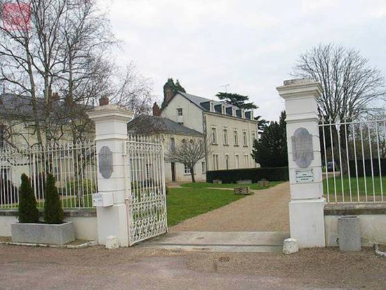

Alain de Benoist : Pourquoi la « déradicalisation » des « islamistes » est vouée à l’échec…
par Nicolas GAUTHIER
Les pouvoirs publics avaient annoncé en fanfare le lancement de « centres de déradicalisation ». Aux dernières nouvelles, les résultats sont plutôt piteux. Cela vous étonne ?
 Centre de déradicalisation en Indre et Loire… Cela ne m’étonne pas du tout. Mais d’abord une remarque d’ordre sémantique, car les mots ne sont jamais innocents. Quel sens faut-il donner à ce terme de « déradicalisation » qui a brusquement surgi en 2004 dans le discours politique ? Il s’agit, apparemment, d’empêcher des gens de se tourner vers la radicalité ? Et pourquoi donc ? On semble tenir pour acquis que la radicalité est un synonyme d’extrémisme, ce qui est parfaitement inexact. La radicalité est une attitude de rigueur, qui s’attache aux racines des choses. Elle implique la conviction, l’intransigeance, nullement le fanatisme.
En outre, de quelle radicalité s’agit-il ? La « radicalisation » en soi n’a aucun sens. En parlant de « radicalisation » sans autre précision, on cherche en réalité à faire croire que l’islamisme radical n’est pas une forme d’islamisme mais une forme de radicalité parmi d’autres. On voit bien alors que, de proche en proche, la tentation pourrait être grande chez les pouvoirs publics de tenter de « déradicaliser » tous ceux qui feraient une critique radicale de la situation présente, de l’époque actuelle ou de l’idéologie dominante. S’abstenir de dire à quelle « radicalité » on s’attaque, c’est ouvrir la voie à toutes les dérives.
Mais c’est aussi laisser entendre que la radicalisation est une sorte de maladie de l’esprit, qu’il faudrait soigner comme telle, alors même qu’on ne dispose d’aucun instrument permettant de la définir ou de la mesurer. Au risque de ne s’attacher qu’aux symptômes en négligeant les causes, on transforme ainsi un problème politique en un problème psychologique ou psychiatrique, ce qui va de pair avec la tendance à décrire les islamistes qui commettent des attentats comme des individus mentalement perturbés, embrigadés ou « contaminés » parce que vulnérables. La « décontamination » relèverait alors de l’infirmerie et du lavage de cerveau. En Union soviétique, on internait déjà les dissidents dans des hôpitaux psychiatriques…
Cela dit, que les « centres de déradicalisation » n’aient abouti à rien, en dépit des budgets engagés, est assurément révélateur.
Les centres en question avaient-ils, d’ailleurs, vocation à « déradicaliser » des individus déjà radicalisés ou à traiter des candidats à la « déradicalisation » ? Sélectionnés selon quels critères ? Et pour en faire quoi ? Pour faire dialoguer entre eux des individus atteints de la même pathologie, comme aux Alcooliques anonymes : « Bonjour, je m’appelle Karim, et j’ai envie de partir faire le djihad. – Bonjour, Karim ! » ? Pour leur donner des cours de « vivre ensemble » et de « dialogue citoyen » selon les « valeurs républicaines » en leur expliquant patiemment que ce n’est pas bien du tout de vouloir décapiter son prochain ? Pour leur faire valoir qu’il est beaucoup plus gratifiant de devenir employé de bureau ou livreur de pizzas que soldat du califat ?
La force du djihadisme ne serait-elle pas d’apparaître comme une possible solution à des individus à la recherche de points de repère existentiels ?
La grande question est de savoir ce que nous avons à proposer en matière de sens à la vie à ceux qui se trouvent en situation de rupture, sinon de désintégration ? « Il y aura toujours des jeunes gens qui préféreront le destin d’un lion mort à celui d’un chien vivant », écrivait récemment Pierre-André Taguieff. « Pour le djihadiste, ajoutait-il, la mort en martyr donne son plein sens à la vie. C’est ce qu’un Occident converti à l’individualisme hédoniste ne peut plus comprendre qu’au travers de la catégorie de « barbarie » […]
Mais, face aux fortes convictions religieuses des djihadistes, les « valeurs » universelles sécularisées ne font pas le poids. Personne n’est prêt à mourir pour la laïcité. Ni pour l’État de droit ou le droit international ! »
Pourquoi ne parvient-on pas à le comprendre ?
Parce que nous avons perdu de vue la dimension anthropologique du religieux. Ce que notre époque ne parvient plus à comprendre, c’est que la religion puisse être vécue sous des formes convulsives. Nous avons oublié l’époque où, dans son De laude novae militiae, Bernard de Clairvaux justifiait sans état d’âme l’homicide des incroyants commis par des hommes d’Église. D’où la tendance à nier le caractère réellement religieux du djihadisme, et le refus d’admettre que les djihadistes se considèrent eux-mêmes comme des croyants. D’où, également, le recours rituel aux vertus de la « laïcité ».
Djihadistes français en Syrie
Nous avons créé un monde désenchanté où l’individu est au centre du social, nous nous sommes convaincus que rien n’est pire que la mort, nous nous sommes habitués à l’idée que la conviction religieuse n’est jamais qu’une opinion individuelle parmi d’autres. Et nous découvrons avec stupeur que certains islamistes estiment qu’ils ne comptent pour rien au regard de la cause qu’ils défendent, qu’ils trouvent tout à fait normal de tuer ceux qu’ils regardent comme leurs ennemis et tout aussi normal de chercher à mourir. Mais comment peut-on croire encore que les raisons de vivre et les raisons de mourir sont les mêmes ? Comment peut-on considérer qu’il y a des choses qui valent plus que notre existence en tant qu’individus ? Comment peut-on estimer que le djihadisme est bien plus attractif que la démocratie libérale ? Nous sommes tout naturellement portés à penser que ces gens-là sont des fous, des « nihilistes », des malades mentaux, et qu’il faut donc les soigner plus encore que les combattre. Que les djihadistes soient engagés dans un fanatisme criminel n’est pas contestable. Mais ce sont les racines de ce fanatisme – de tout fanatisme – que nous ne parvenons plus à comprendre. C’est aussi pour cela que la « déradicalisation » est vouée à l’échec.
Partager cette page